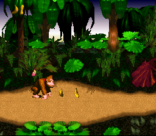
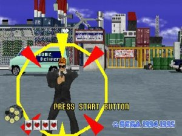
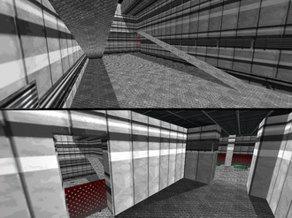

|
| Goldeneye
: Making-Of (Traduction) |
Par David Doak - Presenté au National Film Theatre, le 13 Juillet 2005 à Londres
Texte original écrit par Graham S - Traduction : Nodjo pour Adonf-Jv
| Ceci
vient d’un très bon exposé du NFT aujourd’hui.
Dave a joué à Goldeneye sur le grand écran, et
a expliqué pas mal de choses pendant qu’il jouait. Je n’ai
pris aucune note, donc ce qui suit vient tout droit de ma mémoire
et pourrait être faux. Je n’ai pas fait beaucoup d’effort
dans la qualité d’écriture, donc ça peut
rendre assez mal. Je m’en excuse (…) Dave a rejoint l’équipe de Goldeneye environ un an après le début du développement. Il a été recruté en tant qu’administrateur système pour s’occuper des machines Silicon Graphics. Goldeneye était le bébé de Martin Hollis. Martin est un gars balaise en maths qui vient de Cambridge. Il était le lien initial entre Rare, SGI et Nintendo. Dans ce temps là, il n’y avait pas de bibliothèques pour faire des choses en 3D : vous deviez vous plonger dans le manuel, et Martin était un expert : l’ « étudiant intelligent » qui le comprenait. Nintendo a récupéré la licence : ceux qui l’avaient ne l’ont pas vraiment estimée, ils ont lu le contrat en diagonale pour pouvoir mettre le travail sur pied. |
| Nintendo
a pensé que Rare pourrait être intéressé
par le développement du jeu : ils le voyaient comme un jeu de
SNES en scrolling, à la Donkey Kong Country. Ils ont pensé
que Martin pourrait être celui qu’il fallait : il était
intelligent, s’intégrait bien dans une équipe. Hollis dit que s’il faisait le jeu, ce devrait être un jeu de shoot en 3D, sur l’Ultra. Il a écrit un document de conception de deux pages, qui voyait le jeu comme un Virtua Cop, un jeu de tir sur rails, avec plein d’action et une IA qui ferait des trucs sympas comme courir actionner une alarme. |
 |
| Ils ont commencé à créer la technologie. Ils n’étaient pas très productifs. Leur pack graphique original était fait à partir d’un outil de développement de simulateur de vol. On leur promettait sans cesse que la machine finale tournerait deux fois plus vite que leurs machines de développement. Créer la technologie, pour le jeu et les outils, était un sacré challenge. L’équipe comprenait moins de dix membres dans les 25 ans qui feront tout pour faire le meilleur jeu possible, travaillant de longues heures, dans un environnement adapté à une étroite collaboration des membres de l’équipe pour développer le jeu à plusieurs. Les artistes (Karl Hilton et quelqu’un d’autre) ont visité les lieux, bien entendu ils étaient beaucoup plus complexe que ce qui pouvait se faire sur N64. Pendant un moment, on pensait que le jeu devrait sortir en même temps que le film, mais alors que le film était déjà en production, qu’il prenait moins de temps à être réalisé qu’un jeu (Goldeneye a pris 3 ans), on a compris que les deux ne sortiraient jamais en même temps, et puis la N64 allait être retardée de toute façon. |
|  |
Goldeneye
a été montré à une présentation au
Shoshinkai [95] et est passé plutôt inaperçu. (Il
s’appelait alors simplement « Bond », aux cotés
de « Digger », le nom de code pour Blast Corps). C’était
encore un jeu à la Virtua Cop à ce moment là. C’était une démo à travers Archives. Ils ont réalisé qu’ils avaient déjà programmé la caméra pour voler à travers le niveau sur des rails, et Doom et Quake étaient si populaires, qu’ils ont réalisés qu’ils pouvaient en faire un FPS. |
| Ils ont
d’abord créés les environnement à l’image
de lieux réels, et c’est seulement après qu’ils
ont rajoutés des ennemis et des objectifs. Le résultat
ressemblait vraiment à des lieux réels. Au
début, vous pouviez choisir votre Bond. Là où
vous voyez l’image de Pierce sur l’écran de sélection
du niveau de difficulté, vous pouviez sélectionner
la photo et la changer en Sean. A un moment relativement tardif
du développement, les propriétaires de la licence
l’ont remarqué et leur ont dit : « Vous pouvez
pas faire ça ! On va devoir payer Sean ! » Ils n’avaient
pas de problème avec les autres personnages (Grace Jones
etc.) puisqu’ils avaient les droits des images. Une partie
de Sean a survécu dans le jeu. Un bug montre parfois le bras
de Bond flotter en l’air, d’avant en arrière,
et on peut voir la veste blanche de Sean. |
 |
Dans
la zone extérieure, il n’y a aucun baril ou quoi que
ce soit d’autre. La porte de cette zone s’ouvre un peu
différemment (avec un interrupteur) que toutes les autres portes
du jeu. Les double portes que le camion traverse servent à
empêcher le jeu de devoir afficher le barrage et la zone du
début en même temps. Il fait remarquer un accessoire de la porte : le cadenas. Ils devront peut-être mettre une instruction sur la version japonaise du jeu pour dégommer le cadenas. |
| Sur le
barrage. L’IA des gardes fait qu’ils ne peuvent vous voir
tant que vous n’êtes pas en vue directe sur la représentation
2D du jeu. C’est assez sympa, vu qu’ils ne peuvent pas
vous voir à travers les vitres ou depuis les tours. Ca vous
laisse le loisir de faire des vrais trucs de James Bond, regarder
leurs animations avant de les tuer. Et cela vous rend plus fort :
vous pouvez choisir l’instant de leur mort avec votre sniper,
plutôt que de se faire allumer en passant les portes. Vous n’êtes
pas non plus menacé d’être attaqué sur ce
morceau du barrage, donc vous êtes libre de prendre tout votre
temps et de jouer avec le sniper. Il a rigolé au sujet d’un
site Internet qui relatait ce que devait être les pensées
d’un des gardes des tours, juste avant d’être dégommé
par Bond. |
| Les
quelques niveaux suivants n’apparaissent pas dans le film. Ils
avaient ces superbes environnements (surface, bunker, d’ailleurs
ils ont du tricher et les utiliser deux fois) mais Bond n’y va
jamais dans le film. Ils ont dû enlever la scène du film
où Bond et sa Bentley font la course avec Xenia Onatopp dans
sa ferrari à côté de Monte Carlo, parce qu’ils
étaient pas en train de faire un jeu de course et que la N64
ne pourrait jamais reproduire Monte Carlo. Ils devaient changer l’utilisation
de la frégate par rapport au film, et y ajouter des otages, etc.
|
 |
| Ils ont
mis silo dans le jeu parce que les gars de Bond ont demandé
à l’artiste chargé des niveaux « Qu’est
ce que tu aimerais mettre dans le jeu, si tout était possible
», et il a pensé qu’un silo de missile (plein de
couloirs) et un gros missile seraient marrants. Ils ont aussi réalisés
qu’ils avaient un personnage modélisé pour Boris,
donc ils devaient lui donner quelque chose à faire (il n’était
à la base qu’un bouffon intello dans le film), y compris
un moment où vous le menacez. Ils font remarquer qu’il
y a plein de choses à faire dans GE autres que simplement tirer,
des trucs que Bond aurait vraiment fait. |

|
Pendant
qu’il jouait Archives, il a mis les codes Invisibles, deux armes,
et munitions infinies. Leur influence principale après Bond était
celle de John Woo. Avant que Halo 2 et la double utilisation apparaisse,
ils l’appelait juste « deux armes ». Ils avaient les
vitres qui se brisaient, la fumée, les explosions. Ils étaient
fiers des effets de fumée et d’explosion. Bond n’a
pas l’habitude de tirer comme ça sur tout dans les films
: c’est du Woo. Tout, les caisses, les barils, même les
tables étaient destinées à exploser. La table allait
exploser, tout allait en tomber. |
| Vous pouviez
mettre en place des réactions en chaîne avec ça.
Ca avait son importance pour le gameplay : si vous étiez trop
près d’une table qui explosait, surtout dans les niveaux
de difficultés élevés, vous étiez quasiment
morts. Tout comme ils regardaient Woo, ils écoutaient beaucoup
la bande originale de Heat, surtout le passage avec la grosse fusillade
dans les rues, en pensant que ça serait terrible de faire en
sorte que le jeu fasse des sons comme ça. |
| C’est
pas que Dave ait vu beaucoup de tout ça, en tant qu’employé.
Mais combien ça coûte à faire ? Les salariés, pas grand chose. Mais les stations de travail Onyx était extrêmement chères (250.000$ chacune) d’autant plus qu’il en fallait un pour chaque membre de l’équipe, même si Rare était probablement bien aidé par Nintendo pour la plupart de ces coûts matériels. C’était une énorme usine à gaz, un cube de bonne taille, avec un tableau complet pour faire le Z buffering. |
 |
| Dans le temps, avec une petite équipe qui apprenait quasiment sur le tas (l’équipe de GE n’avait que peu d’expérience dans le développement des jeux), ils pouvaient changer les choses jusqu’à les faire correctement. Si vous aviez une idée sympa, tout le monde venait regarder au dessus de votre épaule et vous donner quelques idées. C’est infaisable dans une équipe de 50 personnes : ça coûte trop cher que tout le monde dérive de la voie originelle et les idées ne se développent pas de la même façon. Vous ne pouvez pas non plus faire des changements facilement : il montre une pièce à trois niveaux dans Archives, et explique comment l’apparence de la pièce a été modifiée pendant le développement. Il rigole en disant qu’au début, ils ont essayé de modéliser les livres eux même plutôt que d’utiliser une texture plate. Aujourd’hui, construire un tel environnement est tellement coûteux, vous compromettriez le gameplay plutôt que de retravailler ce genre de choses. Au sujet de Goldeneye : Rogue Agent. Les gars de l’équipe d’EA sont venus à lui et lui ont dit : « On va faire un jeu meilleur que le tien ». Il prit un ton cynique, la discussion ne volait pas bien haut, et il dit finalement qu’il attendrait de voir quelque chose. Ils ont vraiment essayé de faire le jeu de N64 fidèle à l’univers de James Bond, mais dans GE : RA, vous ne jouez même pas Bond ! Pourquoi feriez vous le choix de ne pas jouer Bond ? Si GE 007 est +Bond, alors GE : RA doit être –Bond. Donc vous devez être un méchant dans le jeu. 007 a déjà le permis de tuer, quoi d’autre de plus méchant voudriez vous faire ? |